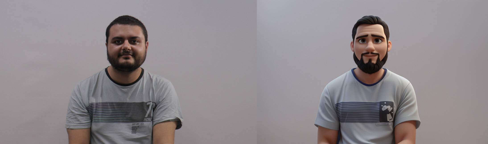
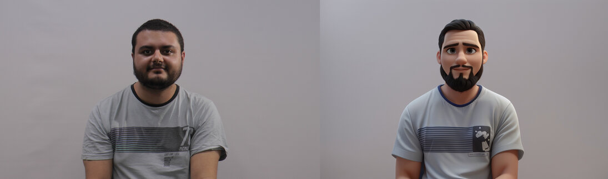

Laboratório 2
Imagens
- Fotos Originais com avatar.

- Fotos em Preto e Branco

- Fotos com 50% da resolução original

- Fotos com 25% da resolução original

Vídeos
- Vídeo Lento
- Vídeo Rápido
- Vídeo Lento com 50% de resolução
- Vídeo Rápido com 50% de resolução
- Vídeo Lento com 25% de resolução
- Vídeo Rápido com 25% de resolução